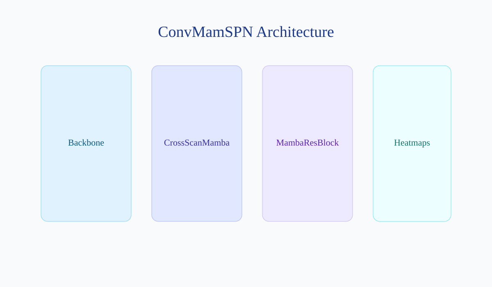
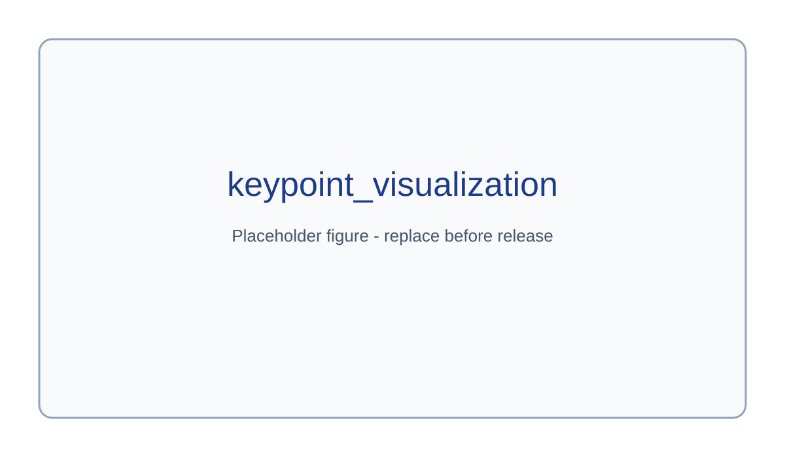
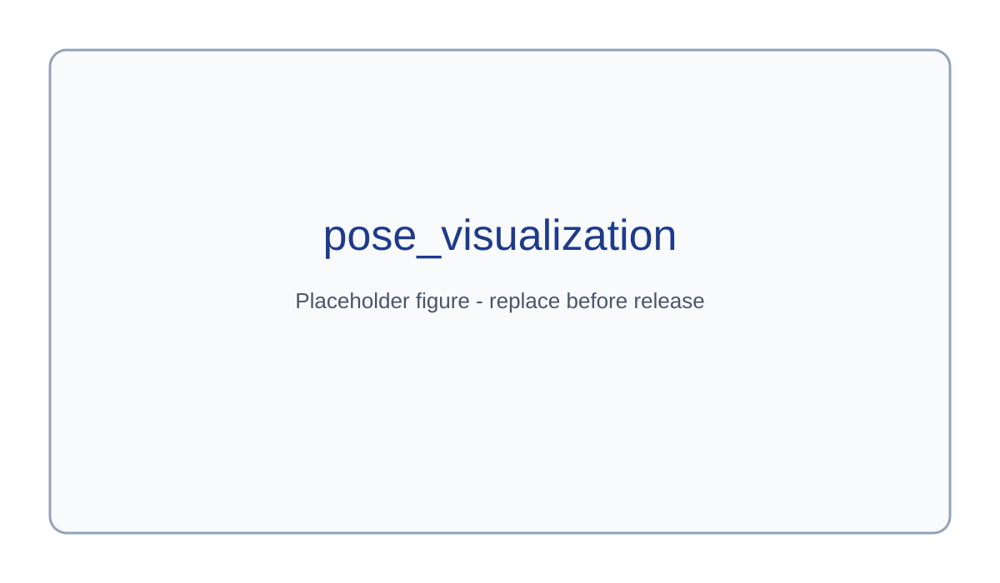
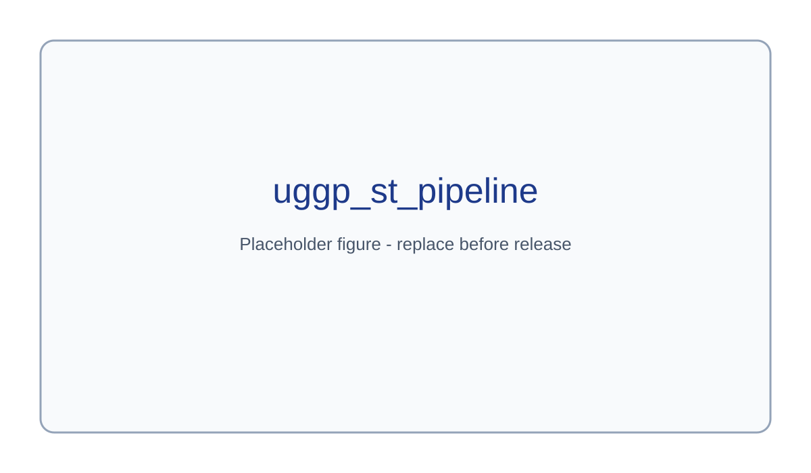
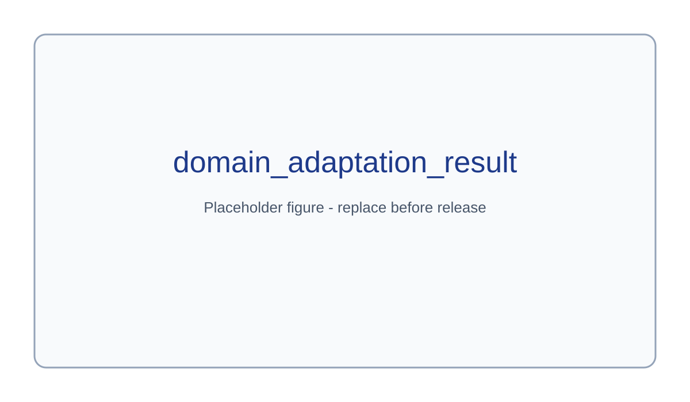

Abstract
We present a unified framework for spacecraft 6D pose estimation and synthetic-to-real adaptation. ConvMamSPN predicts keypoint heatmaps from spacecraft images using a ConvNeXt backbone and a Mamba-based hierarchical decoder, then recovers 6D pose with geometric PnP. UGGP-ST improves target-domain generalization by combining keypoint uncertainty estimation and geometric consistency for pseudo-label filtering, followed by teacher-student self-training. The framework is designed for SPEED/SPEED+ scenarios including Lightbox and Sunlamp domains.
Method Overview

ConvMamSPN first extracts hierarchical visual features using a ConvNeXt backbone. The Mamba-based decoder progressively refines multi-scale features and predicts spacecraft keypoint heatmaps. The 6D pose is recovered using geometric PnP. UGGP-ST further improves target-domain robustness by filtering pseudo labels with uncertainty and geometric consistency before teacher-student self-training.
ConvMamSPN
- ConvNeXt backbone
- CrossScanMamba
- MambaResBlock
- Hierarchical decoder
- Keypoint heatmap prediction
- PnP pose recovery
UGGP-ST
- Keypoint uncertainty estimation
- Heatmap peak confidence
- Entropy uncertainty
- Local variance uncertainty
- PnP reprojection consistency
- Pseudo-label filtering + teacher-student self-training
Results (Placeholder)
| Method | Domain | SPEED_t | SPEED_r | SPEED |
|---|---|---|---|---|
| Source-only | Lightbox | TODO | TODO | TODO |
| ConvMamSPN + UGGP-ST | Lightbox | TODO | TODO | TODO |
| Source-only | Sunlamp | TODO | TODO | TODO |
| ConvMamSPN + UGGP-ST | Sunlamp | TODO | TODO | TODO |
Visualization





Pose Visualization Carousel (4 Domains)
BibTeX
@article{convmamspn_uggpst_2026,
title = {TODO: ConvMamSPN + UGGP-ST},
author = {TODO},
journal = {TODO},
year = {2026}
}